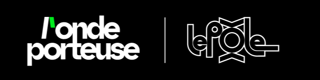
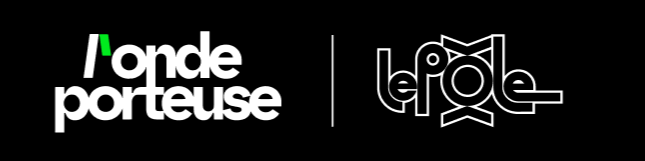

Le budget 2025 de la Région Pays de la Loire, qui prévoit 82 millions d'euros d'économies, a été adopté en décembre 2024. L’un des secteurs les plus touchés par ces coupes : la culture, qui perd environ deux tiers de son enveloppe budgétaire.
Pour comprendre les conséquences des nouveaux enjeux budgétaires des structures culturelles régionales, tu vas composer ton budget pour créer ton propre festival.